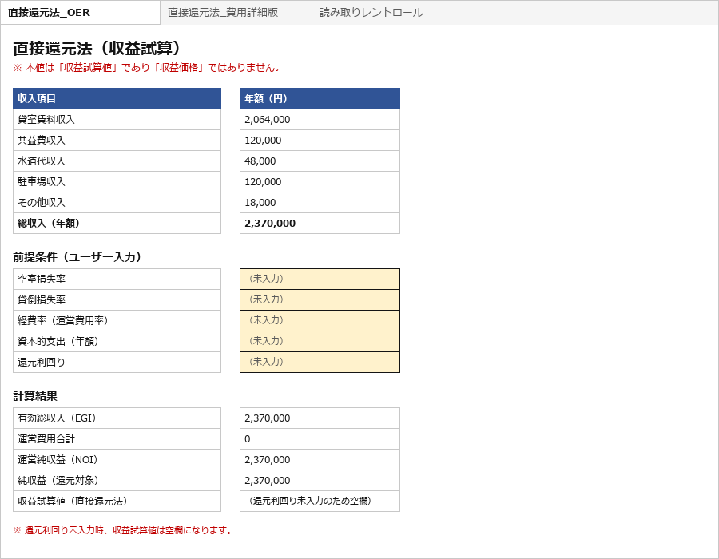
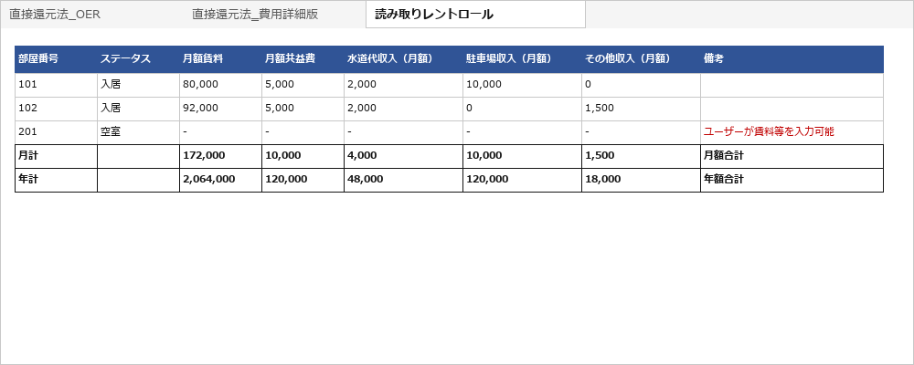

レントロール（CSVまたはテキスト抽出可能なPDF）をブラウザでアップロードし、
抽出結果と付帯収入（水道代・駐車場・その他収入）をpreview。
経常的な付帯収入は自動算入され、direct_cap.xlsx（OER版・費用詳細版を同時生成）を生成・ダウンロードします。
CLI（Docker対応）からも同じロジックで利用できます。
Local-first OSS: preview a rent roll in your browser, then download a direct-capitalization Excel workbook with independent OER and expense-detail sheets. Also available as a Docker-ready CLI.
収益物件の簡易試算を、Excel で毎回一から手作業で作っている
月計・年計・OER へのセルリンクを毎回手で組んでいる
空室率・還元利回りを変えるたびに手修正が発生する
PDF のレントロールをそのまま読み込む仕組みが手元にない
| 機能 | 内容 |
|---|---|
| ローカルWeb UI | ブラウザでレントロールをアップロードし、抽出結果・欠損情報・付帯収入をpreview。direct_cap.xlsx をダウンロード |
| レントロール読み込み | CSV または text-based PDF（pdfplumber による抽出） |
| NOI 計算 | GPI / EGI / NOI / 純収益（還元対象）を算出 |
| 収益試算値 | 直接還元法（純収益 ÷ 還元利回り）— 鑑定評価ではありません |
| 感応度分析 | NOI × 還元利回りのマトリクス出力 |
| Excel 出力 | --excel-output でOER版・費用詳細版・読み取りレントロールの3シート .xlsx を同時生成 |
| 付帯収入（自動算入） | 水道代収入・駐車場収入・その他収入は、経常的な付帯収入として読み取りレントロールに表示され、選択操作なしで両計算シートのGPIへ自動算入されます。 |
| OER版・費用詳細版の独立性 | アプリはどちらの方式を使うか選択させません。両シートは互いの入力値・計算値を参照せず、独立してNOI・収益試算値まで算定します。 |
| 欠損の扱い | 自動補完しない。欠損項目は missing_info.md に明示記録 |
以下はすべて scripts/make_sample_pdf.py が生成した合成サンプルデータです。
実物件・実テナント名・個人情報は含みません。
python src/main.py `
--assumptions assumptions.sample.yaml `
--rent-roll-pdf data/sample_rentroll_simple.pdf `
--output ./output `
--excel-output ./output/direct_cap.xlsx
個別の運営費用明細が不明な場合の簡便法。年額収入セル（E5:E9）が 読み取りレントロール の年計行を自動参照。
空室損失率・採用OER・還元利回り等はユーザーが手入力。
賃料・共益費・水道代収入・駐車場収入・その他収入は、いずれも選択操作なしでGPIへ自動算入されます。 本シートは費用詳細版を一切参照せず、独立して収益試算値まで算定します。
| D列（項目） | E列（値） |
|---|---|
| 貸室賃料収入（年額） | =読み取りレントロール!…（自動） |
| 共益費収入（年額） | =読み取りレントロール!…（自動） |
| 水道代収入（年額） | =読み取りレントロール!…（自動算入） |
| 駐車場収入（年額） | =読み取りレントロール!…（自動算入） |
| その他収入（年額） | =読み取りレントロール!…（自動算入） |
| 総収入（年額） | =SUM(E5:E9)（自動） |
| 空室損失率 | ← 手入力 |
| 貸倒損失率 | ← 手入力 |
| 採用OER（運営費用÷EGI） | ← 手入力 |
| 資本的支出（年額） | ← 手入力 |
| 還元利回り | ← 手入力 |
| EGI / NOI | =自動計算 |
| 収益試算値 | =IFERROR(…/E17,"")（自動） |
個別費用が判明している場合の積み上げ方式。年額収入セル（E5:E9）は本シート独自に 読み取りレントロール を自動参照（OER版とは別の参照）。
管理費・修繕費・損害保険料・固定資産税・水道光熱費・その他運営費用をユーザーが手入力すると、EGI→NOI→収益試算値まで独立して自動計算されます。
本シートはOERを使用せず、直接還元法_OER の入力値・計算値を一切参照しません。
| D列（項目） | E列（値） |
|---|---|
| 貸室賃料収入（年額） | =読み取りレントロール!…（自動） |
| 共益費収入（年額） | =読み取りレントロール!…（自動） |
| 水道代収入（年額） | =読み取りレントロール!…（自動算入） |
| 駐車場収入（年額） | =読み取りレントロール!…（自動算入） |
| その他収入（年額） | =読み取りレントロール!…（自動算入） |
| 総収入（年額） | =SUM(E5:E9)（自動） |
| 空室損失率 | ← 手入力 |
| 貸倒損失率 | ← 手入力 |
| 管理費・管理委託費 | ← 手入力 |
| 修繕費 | ← 手入力 |
| 損害保険料 | ← 手入力 |
| 固定資産税・都市計画税 | ← 手入力 |
| 水道光熱費 | ← 手入力 |
| その他運営費用 | ← 手入力 |
| 資本的支出（年額） | ← 手入力 |
| 還元利回り | ← 手入力 |
| 運営費用合計 / EGI / NOI | =自動計算 |
| 収益試算値 | =IFERROR(…/E16,"")（自動） |
PDF から抽出した区画データ・月計・年計。 空室区画の備考欄が自動的に「ユーザーが賃料等を入力可能」に設定されます。
| 部屋 | 状態 | 月額賃料 | 備考 |
|---|---|---|---|
| A101 | 入居 | 138,000 | — |
| A102 | 入居 | 168,000 | — |
| A103 | 入居 | 150,000 | — |
| A201 | 空室 | — | ユーザーが賃料等を入力可能 |
| B101 | 入居 | 320,000 | — |
| 月計 | =SUM(C2:C6) | 月額合計 | |
| 年計 | =C7*12 | 年額合計 | |
以下はすべて合成サンプルデータ（examples/synthetic_rent_roll.pdf）から生成した内容です。
実レントロール・実テナント名・顧客情報は一切含みません。
上段はv0.5.2の実際の画面構成・実表示文言をもとに再構成した図解、下段はExcel生成後の実データ表示です。
revenue-kun
出力は収益試算Excelであり、鑑定評価ではありません。金額は「収益試算値」であり「収益価格」ではありません。 OCR・スキャンPDF・スマホ撮影には対応していません。ホスティング型SaaSとしては提供していません。
1. ファイルを選択 — synthetic_rent_roll.pdf ／ Preview
2. プレビュー結果 — 区画数: 3 稼働: 2 / 空室: 1
| 部屋 | 状態 | 賃料 | 共益費 | 水道代収入 | 駐車場収入 | その他収入 |
|---|---|---|---|---|---|---|
| 101 | 入居 | 80,000 | 5,000 | 2,000 | 10,000 | 0 |
| 102 | 入居 | 92,000 | 5,000 | 2,000 | 0 | 1,500 |
| 201 | 空室 | - | - | - | - | - |
付帯収入（総収入へ自動算入） — 水道代収入・駐車場収入・その他収入は、抽出されると選択操作なしで総収入（GPI）へ自動算入されます。
GPI（潜在総収入・年額）: 2,370,000 円
3. Excel生成・ダウンロード — 「Generate Excel」で direct_cap.xlsx を生成します。空室損失率・OER・個別費用・還元利回り等はダウンロード後のExcelで入力します。

direct_cap.xlsx の収益試算サマリーシート（OER方式）です。収入は自動算入済み、判断値はユーザーが手入力します。
| D列（項目） | E列（値） |
|---|---|
| 貸室賃料収入 | 2,064,000 |
| 共益費収入 | 120,000 |
| 水道代収入 | 48,000 |
| 駐車場収入 | 120,000 |
| その他収入 | 18,000 |
| 総収入（年額） | 2,370,000 |
| 空室損失率 | （未入力） |
| 貸倒損失率 | （未入力） |
| 管理費・修繕費・損害保険料・固定資産税・水道光熱費・その他運営費用 | （未入力） |
| 資本的支出（年額） | （未入力） |
| 還元利回り | （未入力） |
| 収益試算値 | （還元利回り未入力のため空欄） |
個別費用を積み上げる方式のシートです。収入セルは直接還元法_OERとは別に本シート独自で読み取りレントロールを参照し、判断値・計算結果も互いに一切参照しません（完全独立計算）。

抽出した区画データと月計・年計を確認できます。テナント名は含まれません。
※ 上段のLocal Web UI画面は、実際のテンプレート表示文言とexamples/synthetic_rent_roll.pdfの実データをもとに構成した図解です（写真的なスクリーンショットではありません）。
--excel-output を実行missing_info.md と照合して確認します。
revenue-kunの利用形態は、ローカルWeb UI・ローカルCLI・Docker、 そしてClaude Code / Codex向けSkillです。 いずれもローカル実行専用で、ホスティング型SaaSではありません。 Skillはリポジトリ内に収録していますが、Skillマーケットプレイスでは公開していません。
ブラウザからレントロールをアップロードし、抽出結果・付帯収入をpreviewしたうえで
direct_cap.xlsx をダウンロードできます。
python -m pip install -r requirements-web.txt
python -m uvicorn webui.app:app --host 127.0.0.1 --port 8000docker build -f Dockerfile.web -t revenue-kun-web .
docker run --rm -p 127.0.0.1:8000:8000 revenue-kun-web
ブラウザで http://127.0.0.1:8000 を開きます。ホスト側は 127.0.0.1（ループバック）のみにbindされ、インターネットには公開されません。
Python環境を個別に構築せず、Dockerで再現可能なCLI実行環境を利用できます。 CSVまたはテキスト抽出可能なPDFから、直接還元法Excelワークブックを生成します。 詳細な実行手順はREADMEを参照してください。
Python環境ではCLI（src/main.py）として実行できます。
CSVまたはテキスト抽出可能なPDFを入力し、Excelワークブックを生成します。
手順はREADMEを参照してください。
リポジトリ内に Claude.ai / Cowork向けSkill（skill/）と
Codex向けSkill（.agents/skills/revenue-kun/）の両方を収録しています。Skillマーケットプレイスでは未公開です。
Claude Code または Codex 上で「revenue-kunを起動して」「Web UIを開いて」等と依頼すると、Local Web UIを起動する構成になっています。 revenue-kun自体が自律的に判断・実行するAIエージェントというわけではなく、あくまでClaude Code / CodexのSkillからコマンドを起動・実行できる、という位置づけです。
python -m uvicorn webui.app:app --host 127.0.0.1 --port 8000
起動前に /healthz で既存プロセスの有無を確認し、起動済みの場合は重複起動せず既存プロセスを再利用します。
127.0.0.1 限定bindで、ホスティング型SaaSではありません。
空室損失率・経費率・還元利回り等は、出力された Excel にユーザーが手入力します。Claude / Codex は値を提案しません。
⚠ 合成サンプルデータで動作確認済みに加え、非公開の実務レントロールPDF3件でCLIおよびLocal Web UIからの抽出・Excel生成を確認済みです。 ただし、評価した3件は同一ベンダー系または近似テンプレートとみられます。テンプレート多様性の検証はIssue #21で継続中です。 「実務PDF全般で検証済み」「あらゆるレントロールに対応」という意味ではありません。 Claude Skill マーケットプレイスへの公開は未定で、リリース済みとは表記しません。
v0.5.2では、メインテスト401件・Skillテスト7件が成功しています。Docker環境でLocal Web UIのbuild・起動・/api/preview・/api/generate・Excel出力も確認済みです。詳細は
Release Notes を参照してください。
入力後、EGI・NOI・収益試算値が自動計算されます
| 制限 | 内容 |
|---|---|
| OCR / スキャン PDF | 対象外。text-based PDF のみ（pdfplumber による抽出）。 |
| qualifying real-world PDF | 非公開の実務レントロールPDF3件（同一ベンダー系または近似テンプレートとみられる）でCLI・Local Web UIからの抽出・Excel生成を確認済み。 テンプレート多様性の検証はIssue #21で継続中。 |
| 複雑な結合セル・複数ページにまたがる複雑な表の結合 | 対象外。現バージョンの抽出スコープ外です。 |
| 鑑定評価 | 対象外。出力は「収益試算値」であり「収益価格（鑑定評価額）」ではありません。 |
| 投資助言・法律助言・税務助言 | 提供しません。正式な判断には専門家に確認してください。 |
| 欠損の自動補完 | 実施しません。欠損は missing_info.md に記録します。ユーザーが確認・入力してください。 |
| ホスティング型SaaS / 認証 / 複数ユーザー対応 |
対象外です。ローカルWeb UIはローカル実行専用（127.0.0.1 のみにbind）で、
ユーザーアカウント・認証・永続保存はありません。
|
| スマートフォン撮影画像 | 対象外です。CSVおよびテキスト抽出可能なPDFのみに対応しています。 |
v0.5.2は、OER版・費用詳細版を独立計算化し、経常的な付帯収入の自動算入へ切り替えたリリースです。ローカルWeb UI MVPはv0.5.0で追加されたものです。
Release v0.5.2 を見る
ローカルWeb UI（Docker あり/なし）とCLIのQuick Startは
README にまとまっています。
合成サンプルの examples/synthetic_rent_roll.pdf や
data/sample_rentroll_simple.pdf で動作確認できます。
qualifying real-world text-based rent roll PDF をお持ちの方との 協調検証を募っています（Issue #21）。
Issue #21 を見る本ツールは不動産鑑定評価ではありません。出力される金額は「収益試算値」であり、 鑑定評価による「収益価格」ではありません。欠損項目は推測補完しません。 正式な鑑定評価・価格判断・投資判断・法律的判断が必要な場合は、 不動産鑑定士・弁護士・税理士その他の専門家に確認してください。 非公開の実務レントロールPDF3件（同一ベンダー系または近似テンプレートとみられる）について、CLIおよびLocal Web UIからの抽出・Excel生成を確認済みです。 テンプレート多様性の検証はIssue #21で継続しています。
This tool is not a real estate appraisal. All output values are revenue estimates (収益試算値) and do not constitute appraised values (鑑定評価額). Missing items are not automatically filled in. For formal appraisal, pricing decisions, investment decisions, or legal / tax advice, consult a qualified professional. Extraction and Excel generation have been confirmed against three non-public real-world text-based rent roll PDFs (likely from the same or similar vendor templates); evaluation against a wider range of templates is ongoing under Issue #21.